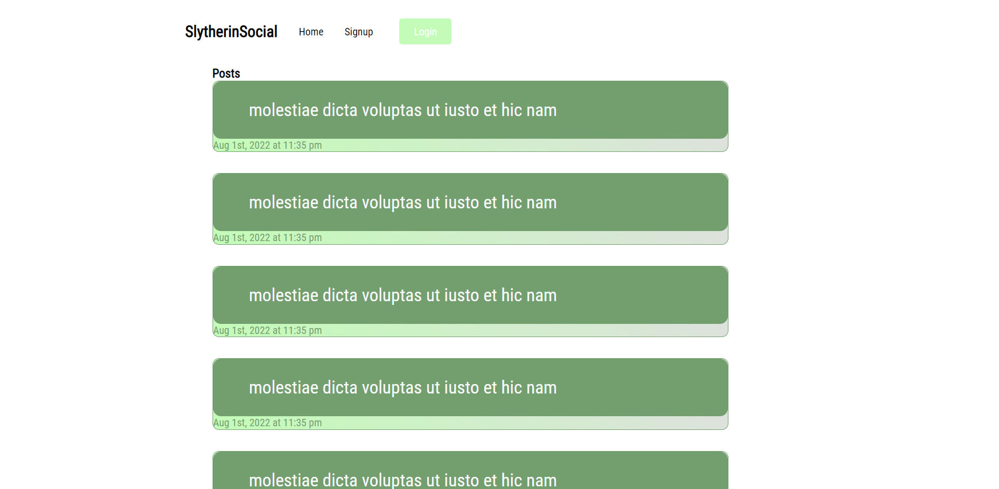
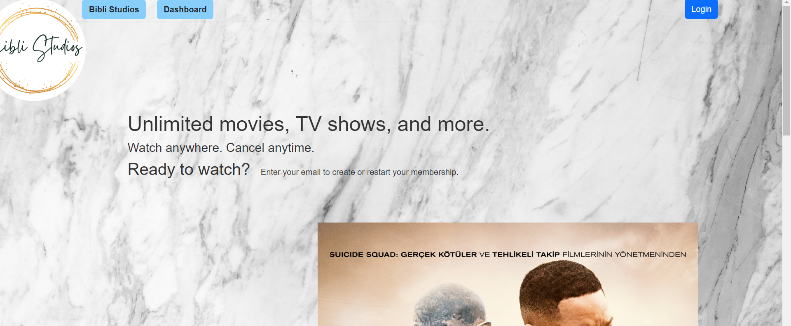

Work

Social Media Site
All of your favorite social media features on a niche site.
Deployed Site GitHub Repo
Recipe Search
Search for dish or by ingredient available for a variety of recipes.
Deployed Site GitHub Repo

Bibli Studios
Add movies to your digital collection and find other users with similar tastes.
Deployed Site GitHub Repo